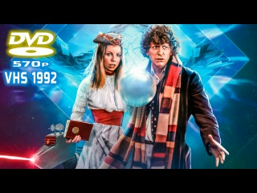
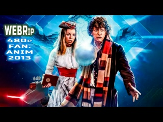
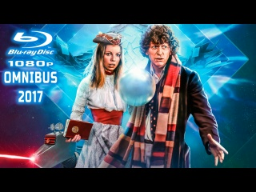
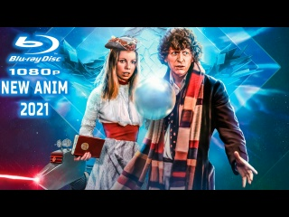
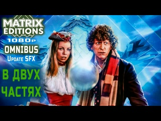
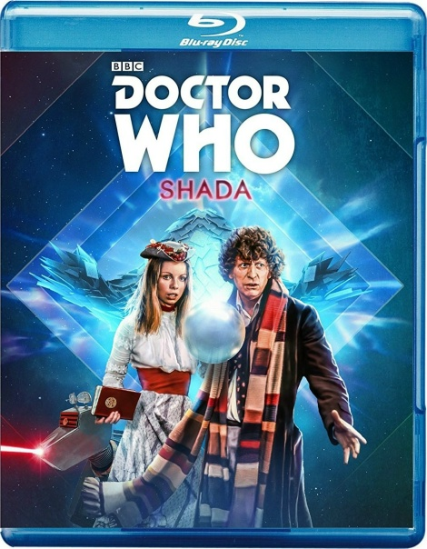
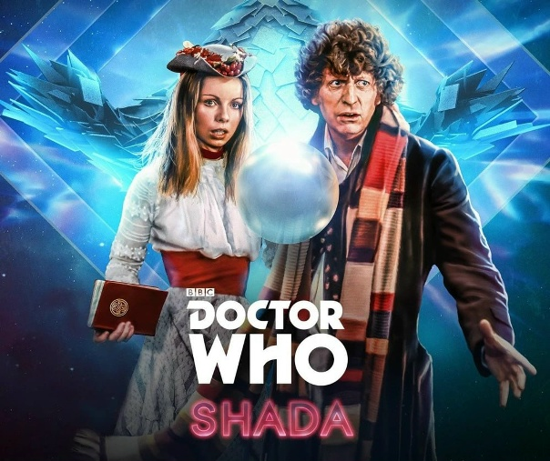
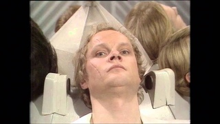

+ комментарии Тома Бейкера к не снятым сценам Субтитры: Русские и Английские |  |
|---|---|
+ фанатская анимация к не снятым сценам (Иэн Ливайн) Субтитры: отсутствуют |  |
+ анимация к не снятым сценам Субтитры: Русские и Английские |  |
+ улучшенная анимация к не снятым сценам Субтитры: только Английские * без озвучки на расширенные сцены |  |
с обновлением визуальных эффектов (cunningmunki) Субтитры: отсутствуют * без озвучки на расширенные сцены |  |
Shada
Должна была выйти: 19 января 1980 - 23 февраля 1980
Дата выхода: 1992 (кассета) | 4 декабря 2017 (+анимация)
Формат: 6 эпизодов по 25 минут
| |
Последний сценарий Дугласа Адамса для «Доктора Кто» — и единственный, который так и не был показан в оригинальном эфире. Забастовка техников BBC прервала съёмки на середине, и серию пришлось отменить. По сюжету Доктор, Романа и К-9 отправляются в Кембридж за профессором Хронотисом — пожилым повелителем времени, тихо доживающим свой век на Земле, который случайно передал студенту книгу, способную освободить Сальзелина, опасного преступника из космической тюрьмы Шада. Адамс позже переработал часть идей в роман «Дирк Джентли». Отснятый материал десятилетия спустя был смонтирован с закадровым текстом Тома Бейкера, а в 2017 году вышла анимационная реконструкция серии целиком.
VHS - июль 1992 | DVD - 7 января 2013 |
|---|---|
 Blu-ray - 4 декабря 2017 |  Blu-ray - 20 декабря 2021 * Версия в нашей группе |

